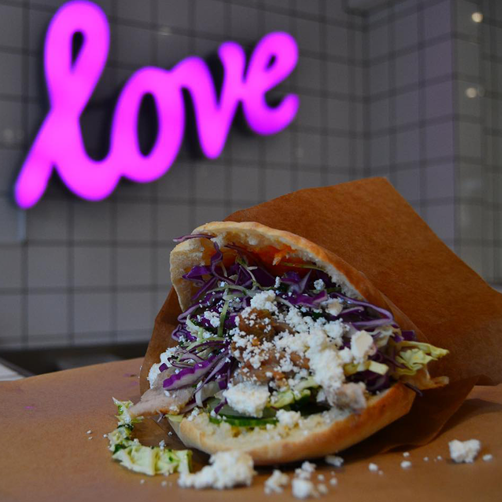
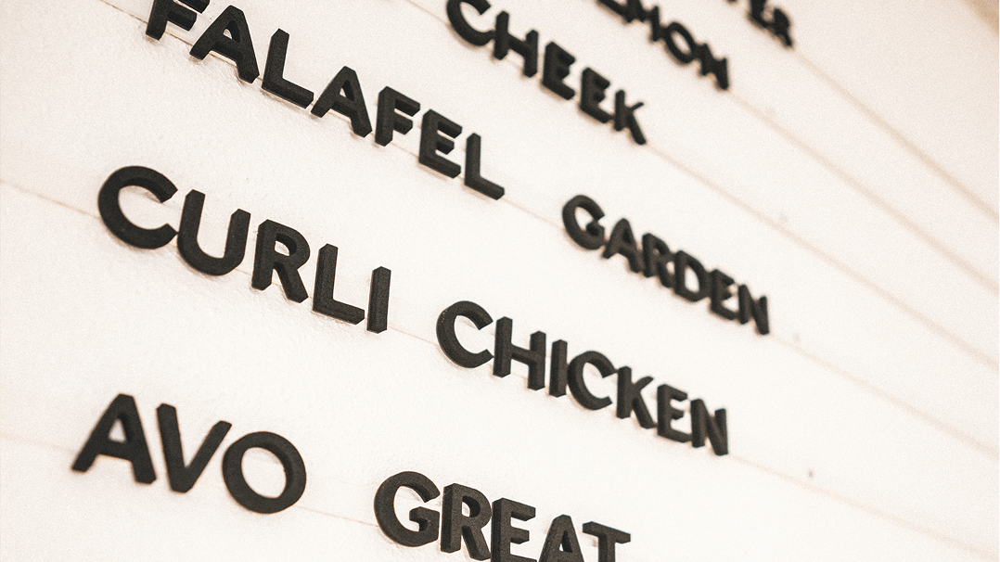
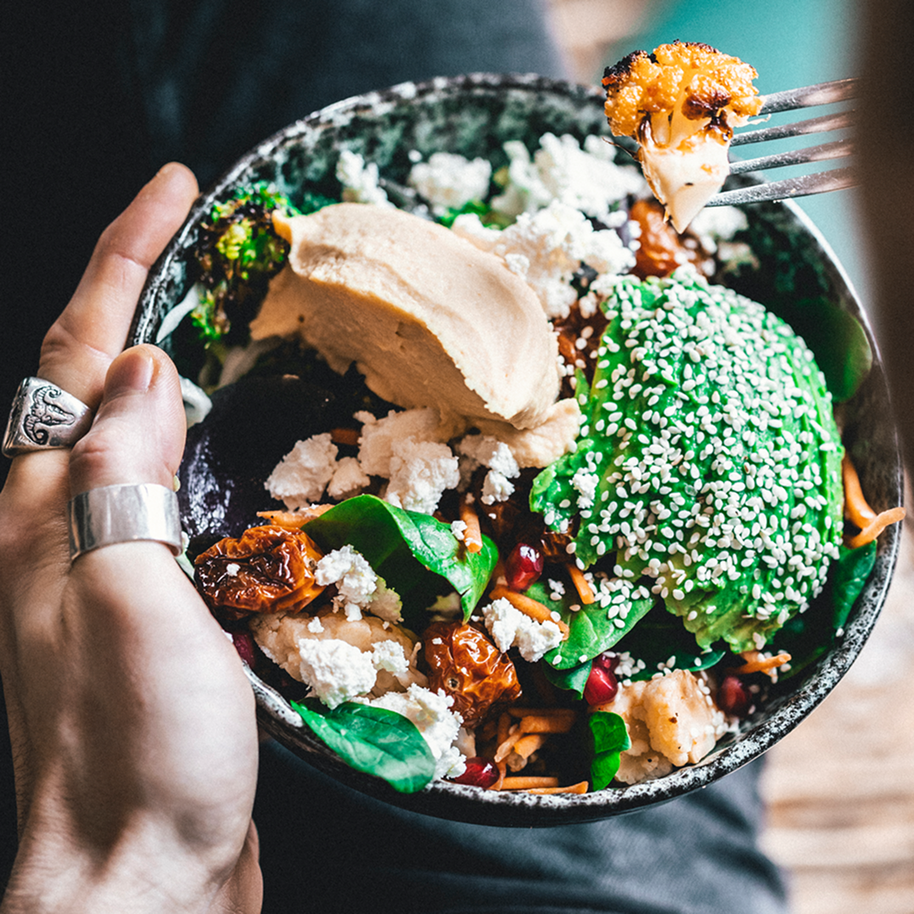

Frisk, sprød, smagfuld & uforglemmelig!
Kål & Co er en moderne, sund restaurant i Kolding, kendt for friske salater og surdejspitabrød med sæsonens grønt.
De tilbyder både veganske, vegetariske og kødretter,
hvor man selv kan sammensætte sin menu.
Beliggende på Slotsgade 13, har de åbent mandag-lørdag kl. 11-19.
Stedet er populært for sin høje kvalitet og et sundt alternativ til fastfood.
Takeaway og levering kan bestilles via Wolt.

Velkommen til Kål & Co – din salatbar i hjertet af Kolding!
Hos Kål & Co brænder vi for at lave sund og lækker mad, der både mætter og inspirerer. Vi er en moderne café og salatbar på Slotsgade 13 i Kolding, hvor du kan sammensætte din egen favorit med friske råvarer, saftige proteiner, hjemmelavede dressinger og cremer – alt sammen med fokus på sæsonens grønt.

Vi tror på, at sund mad ikke behøver være kedelig!
Derfor finder du hos os både klassikere som vores “Chick Chicken Combo” og farverige nyfortolkninger som “Kale It Up Combo” med avocado, rødkål og bagte rødbeder.
Vores menuer er lavet til både kødelskere, vegetarer og veganere – og du bestemmer selv, hvad der skal i din bowl eller pita.
Vi har åbent mandag til lørdag fra kl. 11.00 til 19.00, og du er altid velkommen til at spise hos os, tage maden med eller bestille levering via Wolt.

Hvordan startede vores rejse?
Hej!
Vi er Mathias og Nicklas, og sammen er vi Kål&Co!

Hyggeligt at møde dig!
Siden vi åbnede i 2020, har vores mission været at gøre det nemt og lækkert at vælge sundt – og vi er stolte af at være et populært
stop for både lokale og besøgende i byen.
Hop ind på kaalkolding.dk og tjek menuen
– vi glæder os til at lave noget lækkert til dig!
Kærlige hilsner fra os hos Kål & Co 🌱